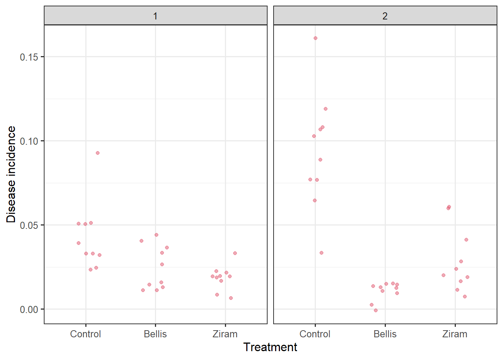

pacman::p_load(
tidyverse,
rio,
janitor,
lme4,
DHARMa,
emmeans,
multcomp
)
conflicted::conflict_prefer("filter", "dplyr")
conflicted::conflict_prefer("select", "dplyr")
theme_set(theme_bw(base_size=12))3 Field experiments
dat <- import("data/field.csv") %>%
mutate_at(vars(fungicide, season, tree), as.factor) %>%
mutate(fungicide=fct_relevel(fungicide, "Control"))
str(dat)'data.frame': 60 obs. of 5 variables:
$ fungicide: Factor w/ 3 levels "Control","Bellis",..: 1 1 1 1 1 1 1 1 1 1 ...
$ season : Factor w/ 2 levels "1","2": 2 2 2 2 2 2 2 2 2 2 ...
$ tree : Factor w/ 10 levels "1","2","3","4",..: 1 2 3 4 5 6 7 8 9 10 ...
$ leaves : int 250 250 250 250 250 250 250 250 250 250 ...
$ diseased : int 27 19 26 30 16 40 27 22 19 8 ...3.1 Data structure
- 2 Experiments conducted in 2020 and 2021
- 3 Fungicide protection treatments: 2 fungicides + non treated control
- 10 trees per treatment
ftable(xtabs(~ season + fungicide + tree, dat)) tree 1 2 3 4 5 6 7 8 9 10
season fungicide
1 Control 1 1 1 1 1 1 1 1 1 1
Bellis 1 1 1 1 1 1 1 1 1 1
Ziram 1 1 1 1 1 1 1 1 1 1
2 Control 1 1 1 1 1 1 1 1 1 1
Bellis 1 1 1 1 1 1 1 1 1 1
Ziram 1 1 1 1 1 1 1 1 1 1dat %>%
ggplot() +
aes(x=fungicide, y=diseased/leaves) +
# geom_boxplot(width=.5) +
# geom_text(aes(label=tree))+
geom_jitter(width=.2, col=2, alpha=.5) +
labs(x="Treatment", y="Disease incidence") +
facet_wrap("season")
3.2 Model fitting
We fitted a generalized linear model including fungicide treatment and season (repetition) and their interaction as fixed effects.
mod <- glm(diseased/leaves ~ fungicide * season,
weights=leaves, family=binomial, dat)Goodness of fit
testDispersion(mod)
DHARMa nonparametric dispersion test via sd of residuals fitted vs.
simulated
data: simulationOutput
dispersion = 1.2395, p-value = 0.064
alternative hypothesis: two.sidedcar::Anova(mod)Analysis of Deviance Table (Type II tests)
Response: diseased/leaves
LR Chisq Df Pr(>Chisq)
fungicide 203.331 2 < 2.2e-16 ***
season 25.954 1 3.497e-07 ***
fungicide:season 44.799 2 1.870e-10 ***
---
Signif. codes: 0 '***' 0.001 '**' 0.01 '*' 0.05 '.' 0.1 ' ' 13.3 Treatment means comparison per season (individual experiments)
emm <- emmeans(mod, ~ fungicide|season, type="response")
res <- cld(emm, alpha=0.05, Letters=letters, type="response") %>%
mutate(`%Control`=abs((prob/dplyr::filter(.,fungicide=="Control")%>% pull(prob)-1)*100)) %>%
tibble
res %>%
rename(Season="season") %>%
ggplot()+
aes(x=fungicide, y =prob)+
geom_pointrange(aes(ymin=asymp.LCL , ymax=asymp.UCL))+
facet_wrap("Season", labeller = label_both) + geom_text(aes(label=str_squish(.group)), angle=90, vjust=-1, hjust=.5, ) +
geom_jitter(data=dat%>%rename(Season="season") , aes(y=diseased/leaves), alpha=.2, width=.1) +
labs(y= "Brown spot incidence (proportion)", x="")